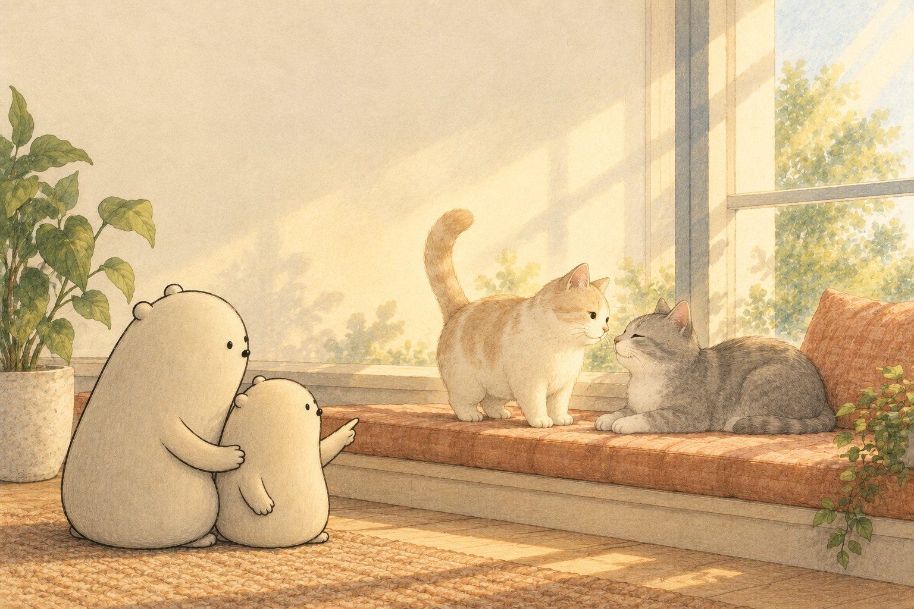
Read aloud together
Mrrp! Meow! (Make two gentle cat sounds.) Big Wonderer and Little Wonderer watch two cats meet in a sunny window. One cat walks closer with its tail held high.
Cats talk with sounds and with their bodies. A meow may ask for food, company, or an open door. A quick mrrp can be a friendly hello.
Ask: Can you point to the cat saying hello with its tail?
A purr often comes when a cat feels cozy, but a worried cat may purr too. We look at the whole cat for clues.
One cat turns its ears sideways. Not now, please. Cats may hiss when they need more space. We stay back and let the cat choose. (Hold up a quiet stop hand.)
Ask: Can you make your arm into a high hello tail?
The cats rest on a pillow and slowly close their eyes. A slow blink can say, “I trust you.” Then one rubs its cheek on a chair leg, leaving a familiar scent.
Ask: What cat message would you like to copy? Big Wonderer and Little Wonderer slow-blink from a calm distance. Cats talk with sounds, tails, ears, eyes, and smells.
Why this morning matters
Listening to how cats talk helps your child notice sounds and body signals while practicing counting, letter sounds and tracing.
Tonight, step by step
- Read the story aloud together and stop at each “Ask”.
- Print the pack and pick two or three pages; there is no need to do them all.
- Point, circle, trace and color. Snip only with a grown-up.
- Fold the picture book and read it again at bedtime.
Inside the printout
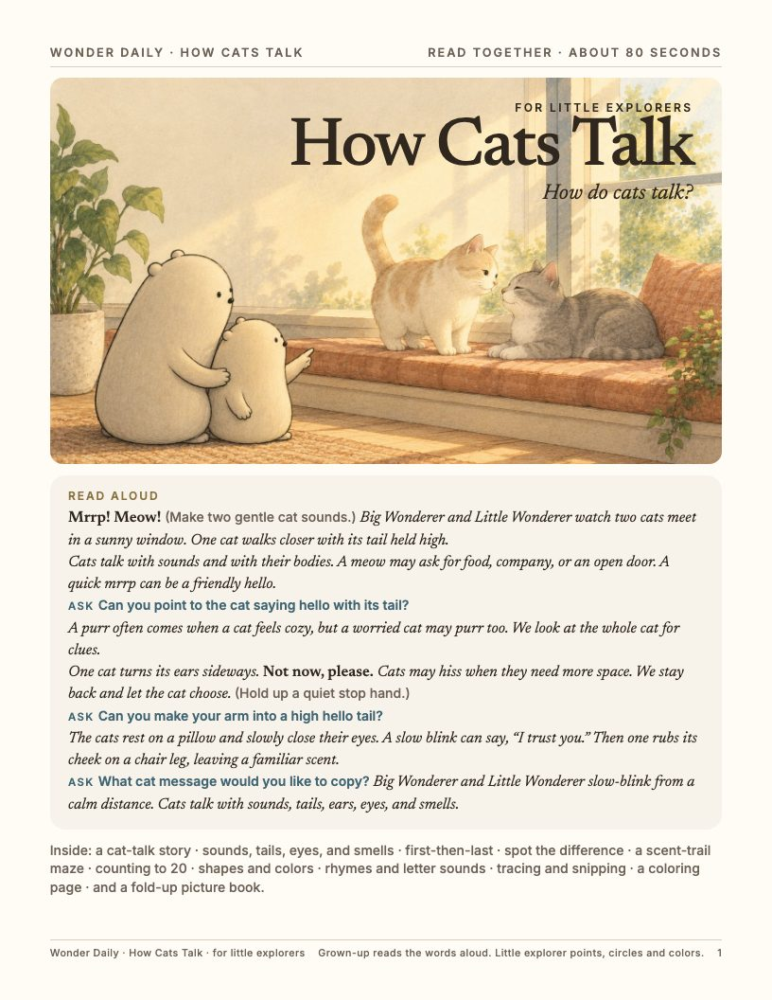
1. Cover and read-aloud 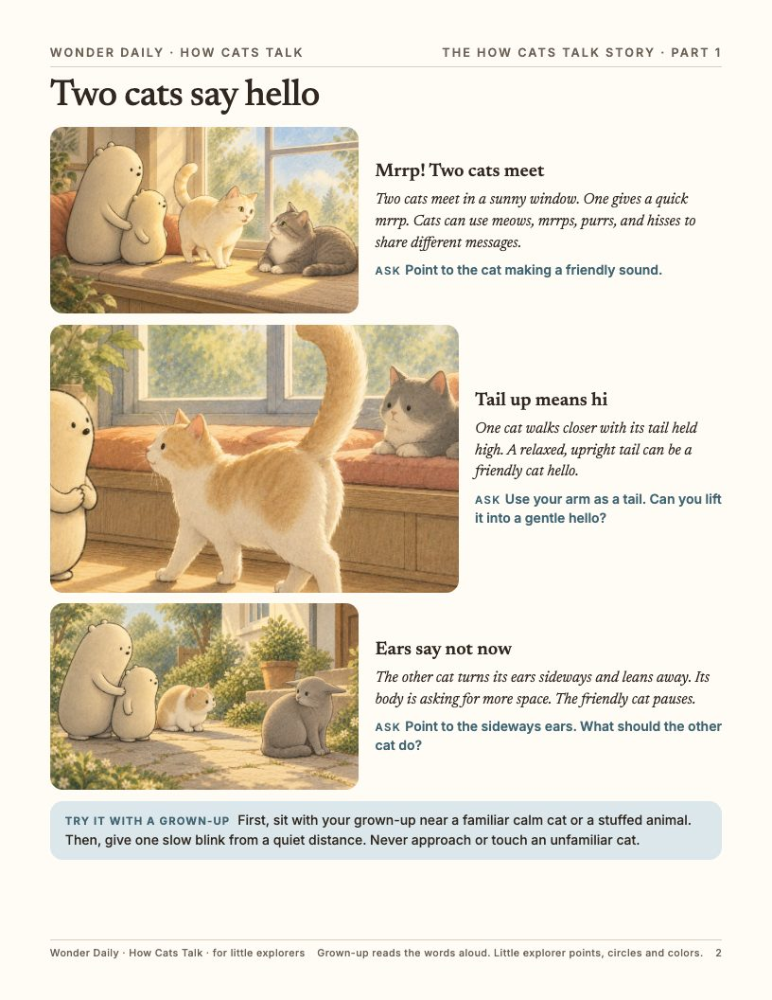
2. The story 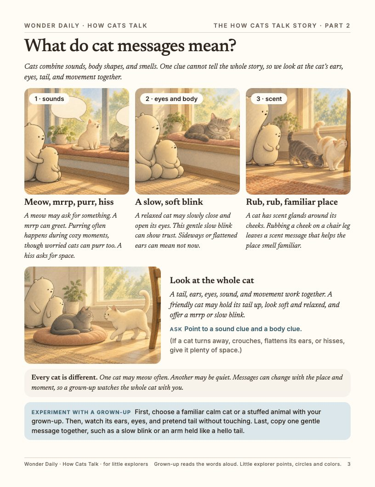
3. Science and an experiment 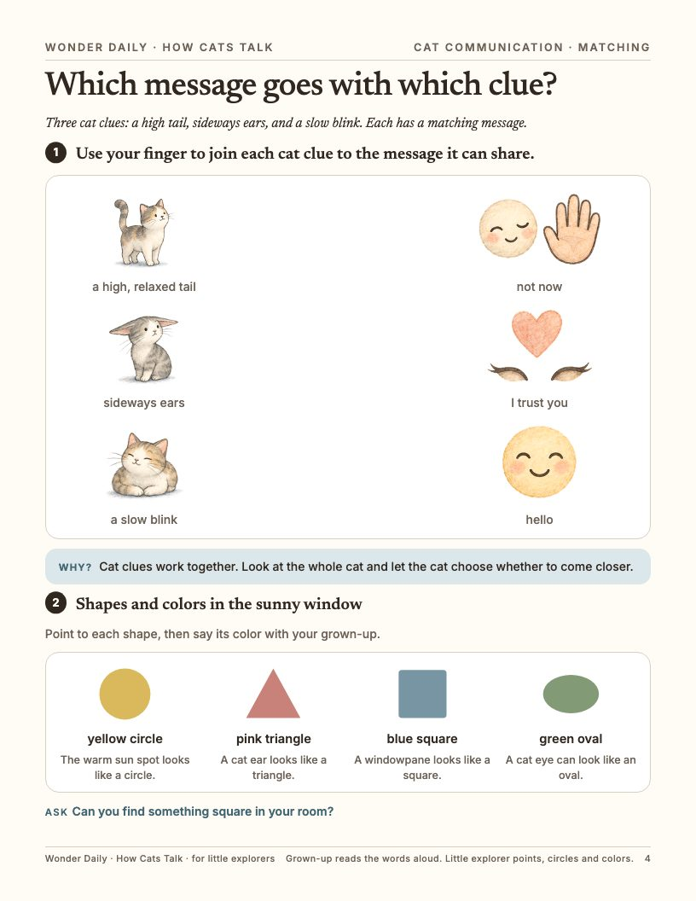
4. Matching, shapes and colors 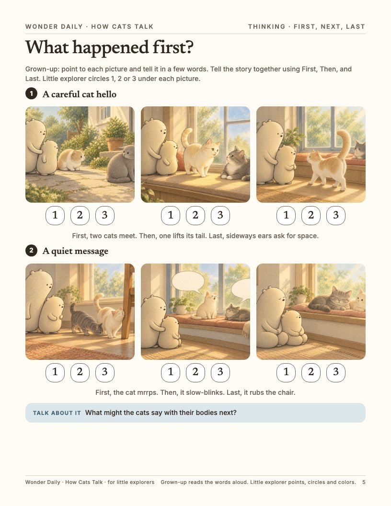
5. First, next, last 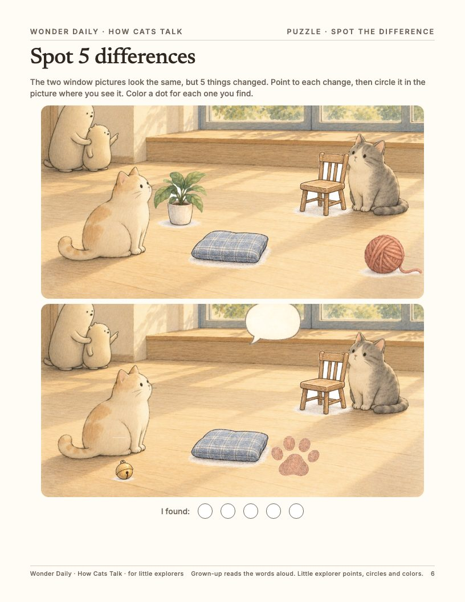
6. Spot the difference 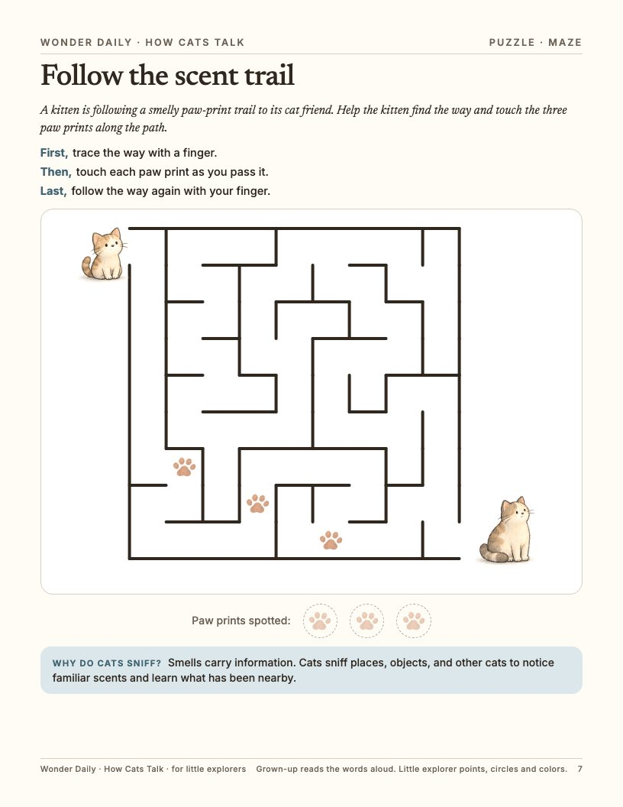
7. Maze 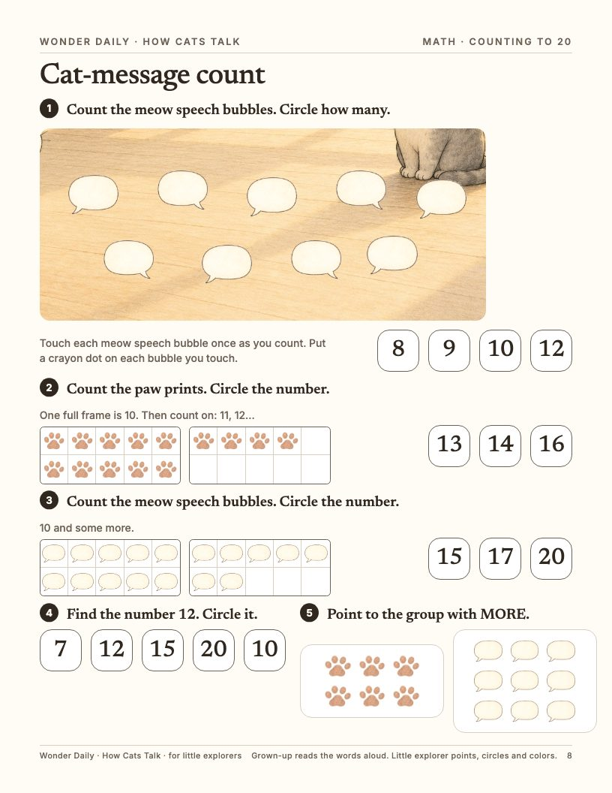
8. Counting to 20 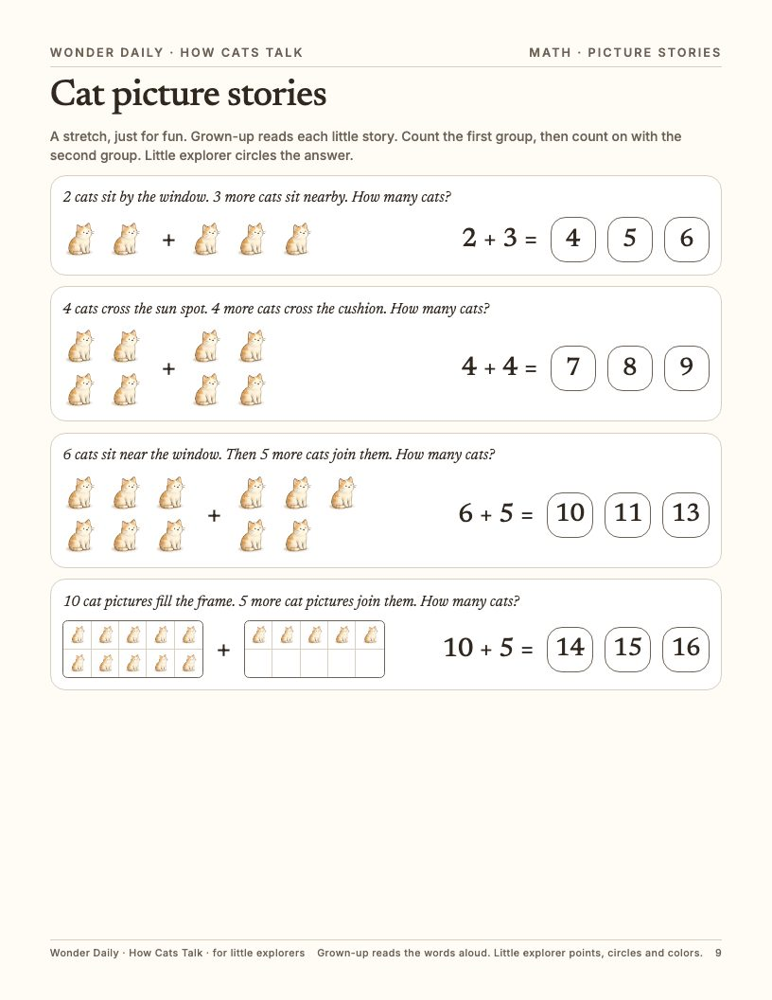
9. Picture stories 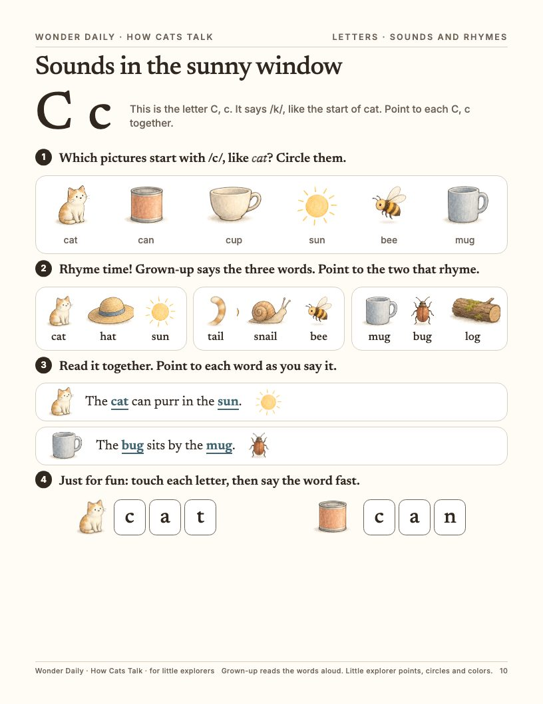
10. Sounds and rhymes 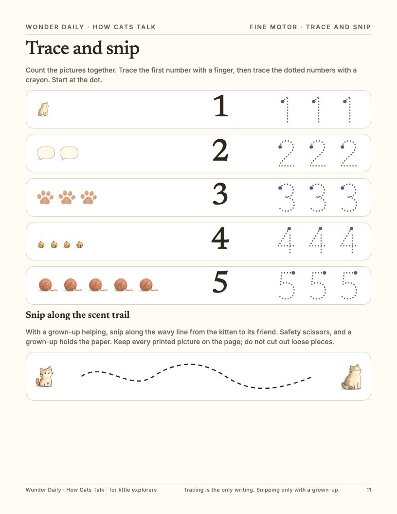
11. Trace and snip 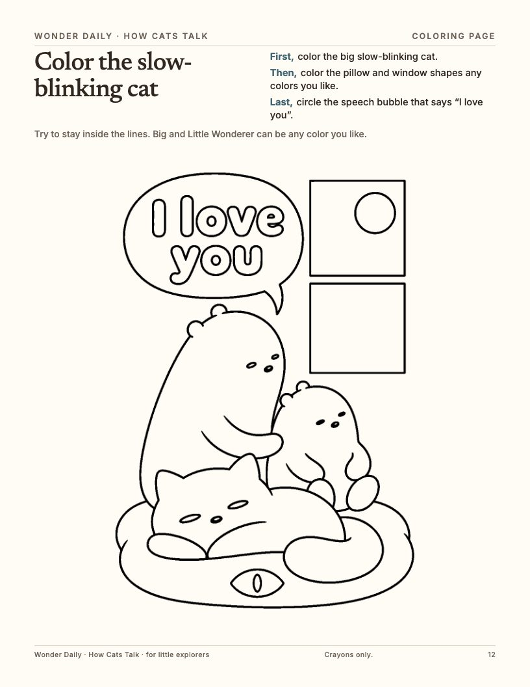
12. Coloring page